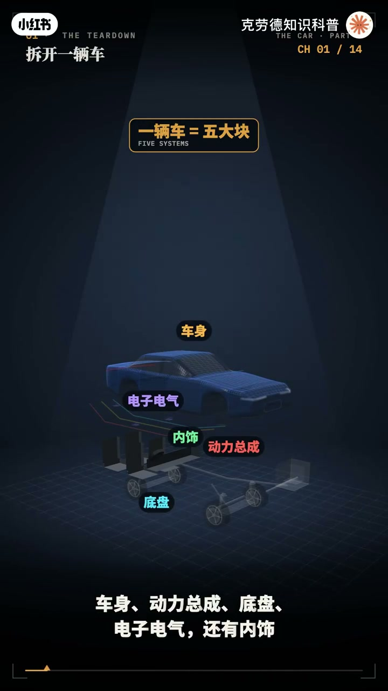
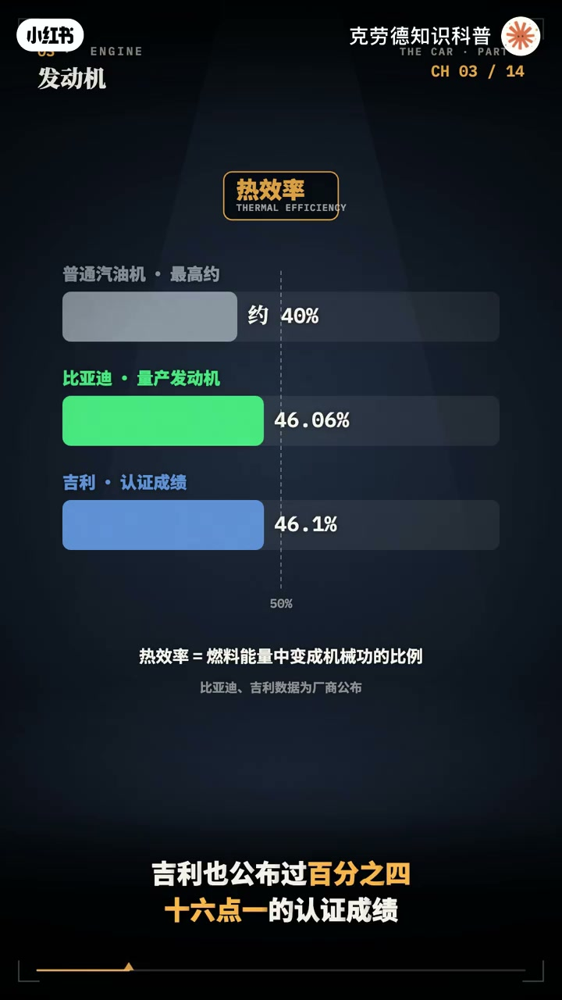
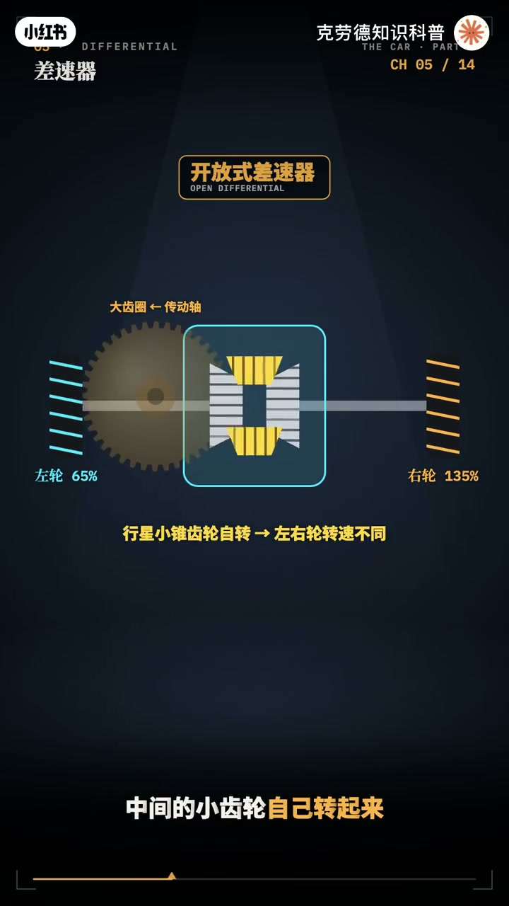
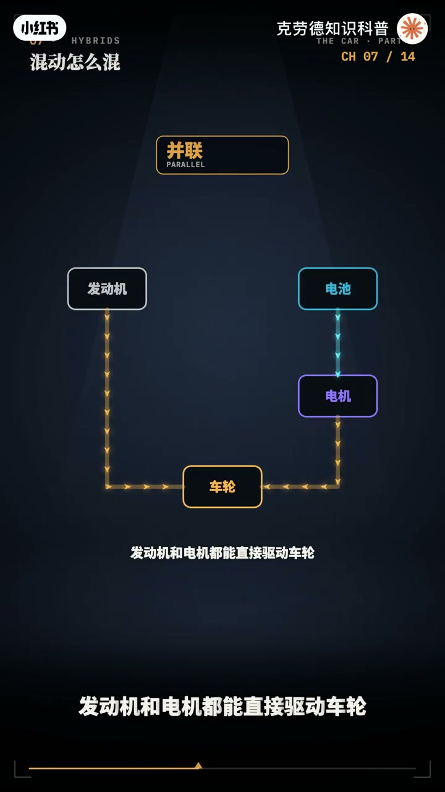
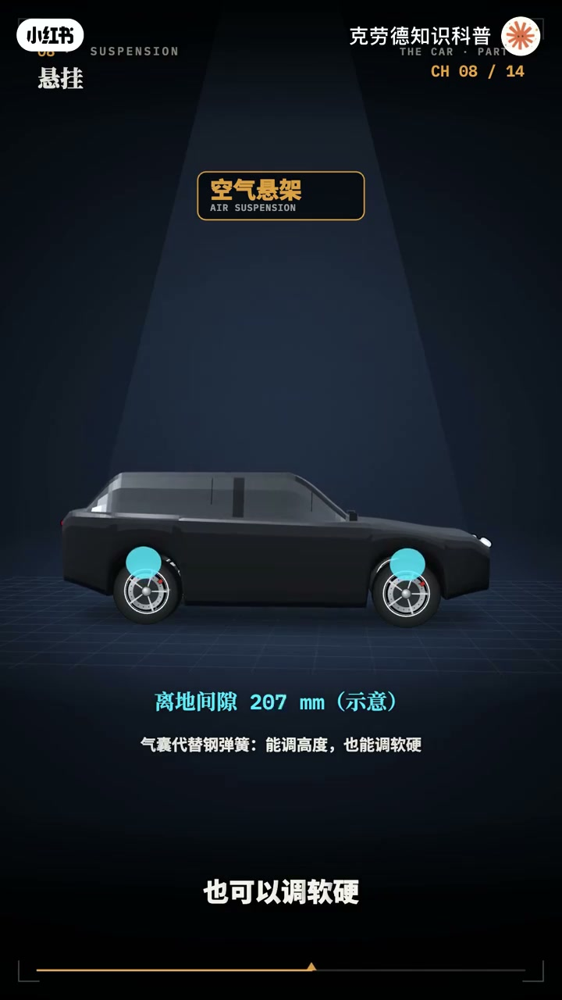
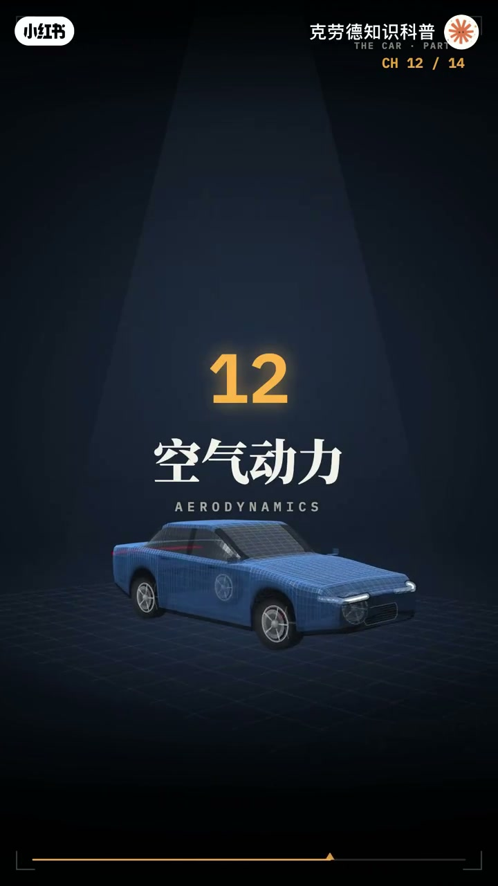
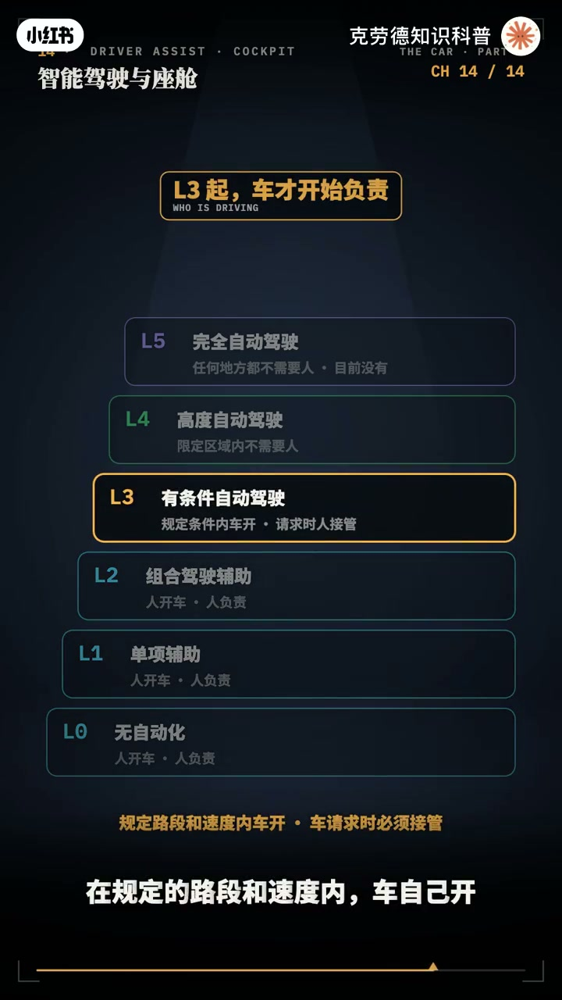
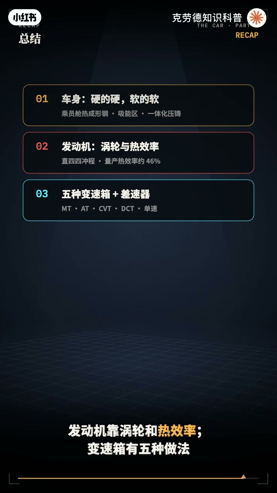

内容要点
「一个视频看懂汽车的所有结构和原理」教程要点：一辆车高速转弯时 → 能抓住地面的 → 只有四块加起来一张A4纸大小的橡胶 → 时速翻一倍；详见正文。
知识结构
一辆车高速转弯时
所以
也叫甩尾
- 46.06%的量产发动机
- 46.1%的认证成绩
一辆车高速转弯时
00:00–02:44一辆车高速转弯时
一辆车高速转弯时；能抓住地面的；只有四块加起来一张A4纸大小的橡胶；时速翻一倍；风阻变成四倍；克服风阻需要的功率变成八倍；方向盘一达；四个轮子走过的距离各不相同；这也是汽车必须有插速器的原因；这七视频；把一辆汽车从里到外拆开；讲清楚每一块是怎么工作的；一辆车可以拆成五大块；车身；动力总成；底盘；电子电器；还有内饰；底盘里；又包括悬挂；转向；刹车；和车轮；现在车身；不是越硬越好；成员舱要尽量硬；用高强度钢和热成型钢；撞击时不变形；保护里面的人；车头车尾却要软一些；故意设计成能被压扁的吸能区；把撞击的能量施掉；一些新车；开始用一体化压住；特斯拉Model Y；把后底板大约70个零件；变成了一整块履柱件；更轻；工序也更少；大多数；家用车用直列四缸发动机；每个缸都按吸气；压缩；做工；排气四步循环；四个缸轮流点火；涡轮增压；是用排出去的废气；吹动一个涡轮；涡轮带动同一根轴上的压气机；把更多空气压进气缸；小排量；也能有大马力；涡轮每分钟；能转十几万转；热效率；是燃料的能量；变成机械工的比例；普通汽油机；最高在40%左右；比亚迪公布过；46.06%的量产发动机；吉利也公布过；46.1%的认证成绩；为什么要变速箱；发动机只在一段转速里；有力又省油；变速箱用不同的齿笔；让车从起步到高速；都落在这段转速里；手动挡；踩下离合；用拨插把不同的齿轮挂进去；自动挡；用几组行星齿轮；靠离合器和制动器；锁住不同的部件；组合出不同的挡位；无极变速；一条钢带套在两个；能变直径的追轮上；速笔可以连续变化；平顺省油；双离合；两个离合器；一个管单数挡；一个管双数挡；下一个挡提前挂好；换挡只是切换离合器；几乎不断动；电动车大多；只有一个固定的减速笔；因为电机从零转速到一万多转；都能高效处理；转弯时；外侧车轮要比内侧车轮多；走一段路；如果两个轮子硬连在一起；就会一边打滑；一边被拖着走；差速器；是一组小锥齿轮；直行时；它整体一起转；转弯时；中间的小齿轮；自己转起来；让左右车轮；以不同的速度转；同时把扭矩分给两边；它的弱点是；一边轮子悬空打滑时；力会全跑到打滑的那边


02:43–05:14所以
所以；越野车要有差速锁；性能车用限滑差速器；电池；常见的有磷酸铁锂；和三元锂；磷酸铁锂更便宜；寿命更长；热稳定性更好；三元锂能量；密度更高；同样重量能跑更远；电机；多数用永磁同步电机；电机从零转速起；就能输出最大扭矩；所以；电动车起步特别快；电控；把电池的直流电；变成交流电；精确控制电机的转速；和扭矩；刹车时反过来；让电机发电；把能量回收进电池；按美国能源部的数据；电动车能把电网电能的；7乘7以上；送到车轮；燃油车只能把；汽油能量的；12%到30%；送到车轮；串联；发动机只发电；电机驱动车轮；增程式就是这种；并连；发动机和电机；都能直接驱动车轮；功率分流；丰田的混动；用一组行星齿轮；把发动机；发电机；和驱动电机连在一起；发动机的力；一部分直接驱动车轮；一部分拿去发电；比亚迪的；DMI以电区为主；大部分时候；靠电机驱动；高速巡航时；发动机才通过离合器；直接参与驱动；悬挂由弹簧和减震器组成；弹簧扛住重量；减震器吸收弹跳；麦芙逊；减震器和弹簧；一起充当转向支柱；结构简单；省空间；大多数车的前悬挂；都是它；双插臂；上下两根插臂；轮子上下跳动时；轮胎的接地角度；保持得更好；操控更好；多连杆；用四五根连杆；转动；舒适和操控坚固；常见于中高端车的后悬挂；扭力量；左右后轮；用一根横梁连着；便宜；省空间；很多家用车的后；悬挂用它；空气悬架；用气囊代替钢质弹簧；可以调高度；也可以调软硬；方向盘通过齿轮齿条；把转动变成左右推拉；现在基本都配电动注力；转弯时；内侧前轮；要比外侧前轮拐得更多；因为它走的缘更小；这叫阿克曼转向几何；轮胎的抓地力；是有限的；它要同时负责转弯；加速和刹车；用了这边；那边就少了；这就是摩擦缘；前轮先抓不住；车会往弯外推；方向打了车；却不怎么转；这叫转向不足；也叫推头；后轮先抓不住；车尾往外甩；这叫转向过度


05:12–08:10也叫甩尾
也叫甩尾；刹车靠刹车片；夹住刹车盘；刹车的动能变成热；ABS防爆死；在1978年；首次装上量产车；轮子快爆死时；自动松一下；让车轮保持滚动；方向还能控制；ESP车身稳定系统；在1995年量产；车一推头或甩尾；它就单独杀某一个轮子；把车拉回来；风阻和速度的平方程正比；克服风阻需要的功率；和速度的立方程正比；时速从60提到120；风阻要变成4倍；功率要变成8倍；风阻系数越小越省能；小米SU7官方公布0.195；奔驰EQS是0.20；都是量产车里很低的一批；高速时；车的大部分能量；都花在推开空气上；这也是电动车；高速续航掉的快的原因；1959年；沃尔沃把3.10安全带；装上了量产车；并把专利免费开放给所有车企；碰撞时；气囊在几十毫秒内弹开；比窄一下也还快；吸能区；安全带；气囊一起工作；让人减速的过程拉长；人受到的力就变小；自动驾驶；通常分成0-5级；0-2级都是驾驶辅助；车能帮你控制方向和速度；但开车的仍然是人；除了事故；由驾驶人负责；3级是有条件自动驾驶；在规定的路段和速度内；车自己开；人可以不盯路；但车请求时必须接管；4级在限定区域里；完全不需要人；比如无人驾驶出租车；5级是任何地方都不需要人；目前还没有；今天中国卖的新车里；6成以上带2级组合；驾驶辅助；监管要求；宣传时不能把它说成自动驾驶；3级正在起步；奔驰2021年；拿到全球第一个3级认证；最早限速60公里；2025年12月；中国首批两款3级车型；获准入；分别在重庆和北京的指定路段；限速50和80公里；车靠什么看落；摄像头认颜色和文字；毫米波雷达侧距离和速度；不怕雨雾；激光雷达用激光扫除三维点晕；几种数据融合起来；再交给芯片去判断和规划；智能座舱；是车里的电脑和手机；大屏；语音助手；抬头显示；还有在线升级；车买回家以后；还能通过软件变得更好用；回顾一下；车身硬的地方硬；软的地方软；发动机靠涡轮和热效率；变速箱有5种做法；叉速器让左右轮转速不同；电动车靠电池；电机；电控；混动有串联；并联和功率分流；悬挂；转向；抓地力；电子稳定；封组和安全带；一起决定；车好不好开；安不安全；0-2级是辅助；3级才开始让车负责；一张A4纸大小的橡胶；承载着3万个零件的全部努力




口述/画面要点（40段）
结合 Whisper medium 与画面大字整理；专有名词已校对。
一辆车高速转弯时
能抓住地面的
只有四块加起来一张A4纸大小的橡胶
时速翻一倍
风阻变成四倍
克服风阻需要的功率变成八倍
方向盘一达
四个轮子走过的距离各不相同
这也是汽车必须有插速器的原因
这七视频
把一辆汽车从里到外拆开
讲清楚每一块是怎么工作的
一辆车可以拆成五大块
车身
动力总成
底盘
电子电器
还有内饰
底盘里
又包括悬挂
转向
刹车
和车轮
现在车身
不是越硬越好
成员舱要尽量硬
用高强度钢和热成型钢
撞击时不变形
保护里面的人
车头车尾却要软一些
故意设计成能被压扁的吸能区
把撞击的能量施掉
一些新车
开始用一体化压住
特斯拉Model Y
把后底板大约70个零件
变成了一整块履柱件
更轻
工序也更少
大多数